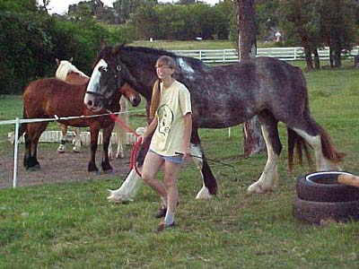

Working with Emma (After all this I worked on mounting.
Bart stood at her head and I did multiple
practice mounts with my foot in the stirrup,
to the point of standing in the
stirrup but not swinging my leg over.
She only moved once, and it may have
been for balance. Not too concerned. Still
not sure if I'll do her first rides.
She hasn't shown any inclination to buck,
etc, while I've worked her, but she
is an awfully big youngster. We'll see.)
She's still learning, but finally
left is left and right is right. I was starting to wonder about her ability
to learn.
I'm not keeping contact with the reins
yet, so we tend to weave around the field in the general direction I want
to go. I'd rather that than introduce rein contact before we have forward
down.
She's nice and steady. Haven't had
her throw a fit since the first time I lunged her this year. She doesn't
seem big, but look how small the saddle is compared to her.
Second time with the side reins and
she's figured them out.
She seems quite happy to drag her
nose on the ground, which is the response I want right now. On her own
her head's way up with a hollow back.
No jumping, but maybe she can learn
where her feet are and not step on them so much.
Just obstacle stuff, so she learns
that she can trust me and go where I ask.
She's got a nice short back and easily
overstrides.

I still carry the whip for leading,
but she's gotten more forward and responsive.